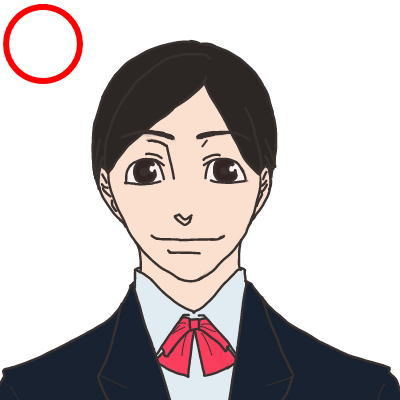
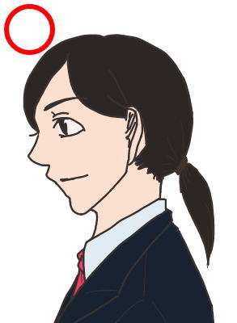
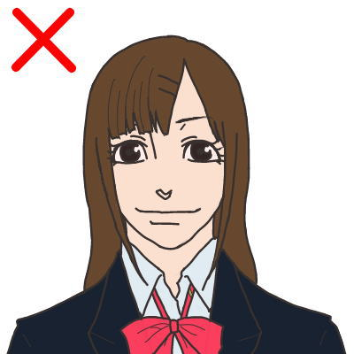

  
・何度もお辞儀をするのに乱れない髪型にしましょう。
・横は
耳
を出したほうが印象がよくなります。
・後ろの髪が長いなら結びましょう。
・前髪を溜めているときはピンが見えないようにしましょう。
・ダウンスタイル・ポニーテル・ツインテール等の髪が揺れる
髪型はあまり良い評価を与えられないのでやめましょう。
・黒いゴムで髪をまとめるだけではなく、派手すぎないパレッタなどをつけても構いません。